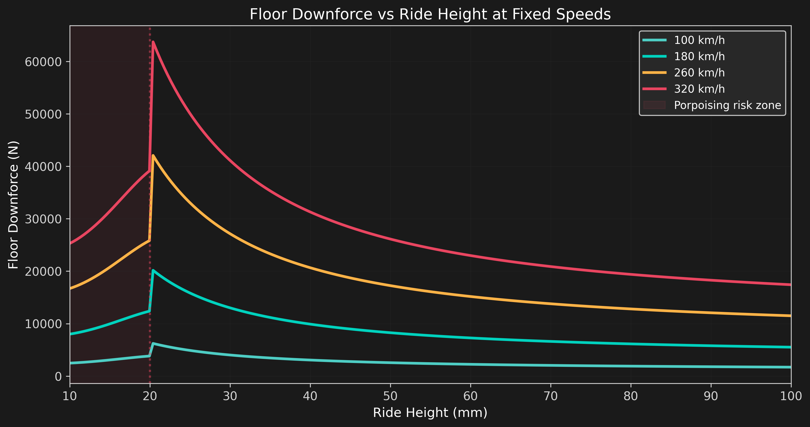
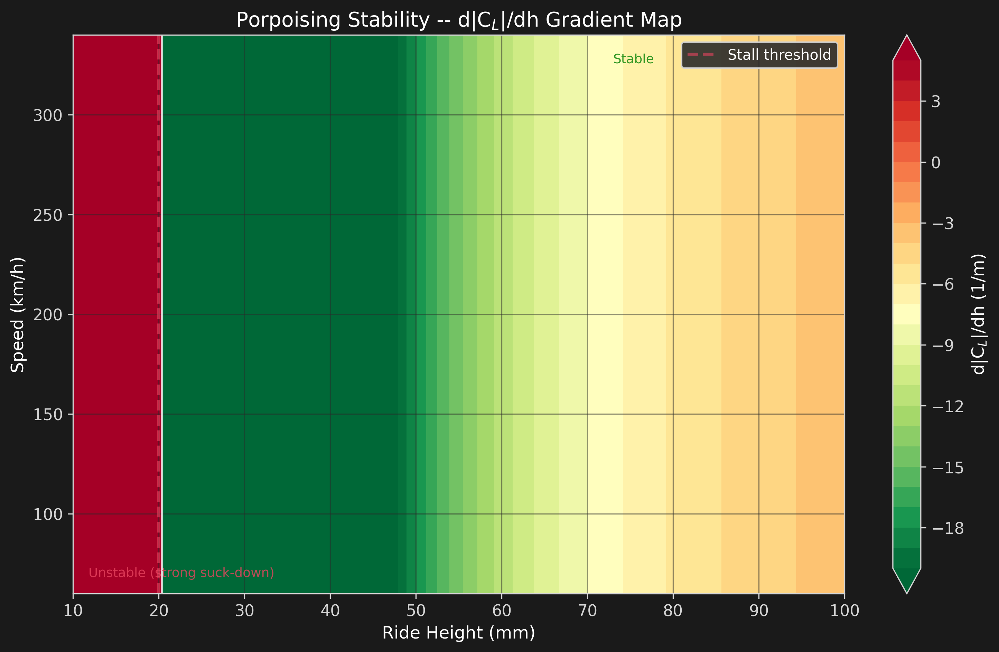
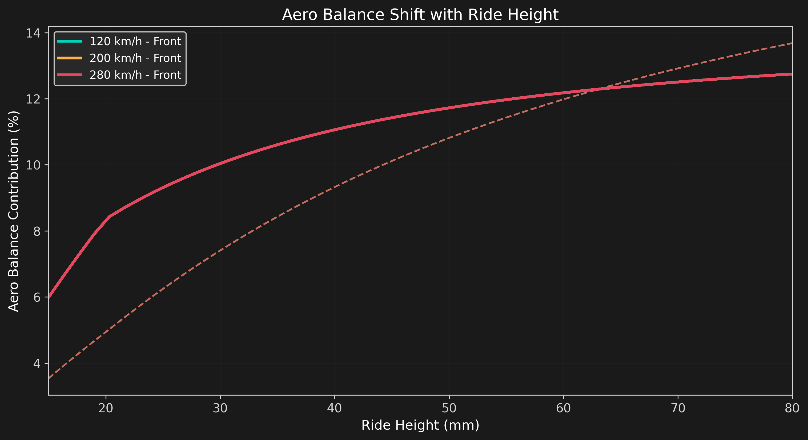
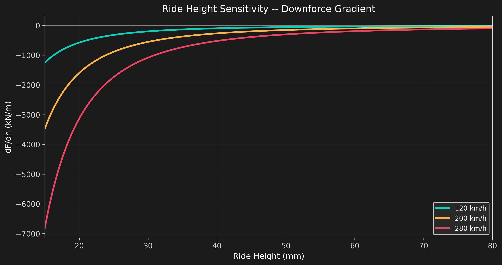

Ride Height & Ground Effect
Physics of Ground Effect
In the 2022+ ground effect era, the floor is the dominant downforce generator. The underbody venturi tunnel accelerates air between the car and the track, creating a low-pressure region that sucks the car toward the ground.
The downforce generated by the floor is inversely proportional to ride height:
where \(h\) is the ride height, \(A\) captures the linear ground effect from image vortex interactions, and \(B\) captures the quadratic venturi acceleration effect. As \(h\) decreases, the flow accelerates more aggressively, creating more downforce -- until the diffuser stalls.
Downforce vs Ride Height
At high ride heights, ground effect is weak. As the car drops closer to the track, the venturi accelerates and downforce rises steeply. Below ~20mm, the diffuser can experience flow separation (venturi stall), causing a sudden collapse in downforce.

The stall is modeled as a sigmoid drop below \(h_{crit} = 20\text{mm}\):
where \(\tau = 4\text{mm}\) controls the sharpness of the stall transition.
Ground Effect Map
The contour map shows the floor's lift coefficient magnitude across the full (ride height, speed) operating envelope. The venturi stall boundary creates a sharp gradient at ~20mm.

Porpoising Stability Analysis
Porpoising is an aero-elastic oscillation caused by the coupling between ride height and downforce. When the gradient d|C_L|/dh is strongly negative (more downforce as the car drops), the car is sucked down aggressively. If this is followed by venturi stall (sudden downforce loss), the suspension rebounds and the cycle repeats.

The stability map reveals that porpoising risk is highest in the 20--40mm ride height range at high speeds (250+ km/h). This matches the real-world behavior observed in 2022--2023 where porpoising was most severe on high-speed straights.
Aero Balance Shift
Changing ride height affects front and rear downforce differently. The front wing is closer to the ground and more sensitive to ride height changes, while the rear wing operates in cleaner air and is less affected.

As ride height decreases, the front wing gains proportionally more downforce through ground effect, shifting the aero balance forward. Teams use this to fine-tune handling characteristics -- a lower front ride height increases front grip but can induce understeer at high speed.
Ride Height Sensitivity
The gradient dF/dh measures how aggressively downforce changes with ride height. High sensitivity means small suspension movements cause large downforce variations, making the car "nervous" over bumps.

Key Findings
- Critical stall threshold: Venturi stall occurs below ~20mm ride height. The 2022 technical regulations raised minimum ride height to mitigate porpoising, but the underlying physics remains.
- Porpoising risk corridor: Maximum instability occurs at 20--40mm ride height, 250+ km/h -- exactly matching the 2022 porpoising observations.
- Exponential ground effect: Floor downforce scales as 1/h + 1/h^2, doubling from 100mm to 50mm ride height.
- Balance migration: Lower ride heights shift aero balance forward by 2--4 percentage points, increasing front grip at the expense of high-speed understeer.
- Sensitivity peak: dF/dh is 3--5x higher at 25mm than at 80mm, explaining why low-ride-height setups magnify every bump and undulation.
Limitations
- Venturi stall model uses an empirical sigmoid -- real diffuser stall is highly geometry-dependent and influenced by yaw, pitch, and heave.
- Front and rear ride heights are treated as coupled; in reality they vary independently and asymmetrically.
- Suspension kinematics, damper response, and chassis torsion are not modeled -- the porpoising analysis is purely aerodynamic.
- Tire deflection and its effect on effective ride height are not included.
- Transient effects (heave velocity, pitch rate) that modify the instantaneous downforce are not captured.
- The 20mm stall threshold is an estimate; tunnel geometry, diffuser angle, and Reynolds number all shift this threshold.